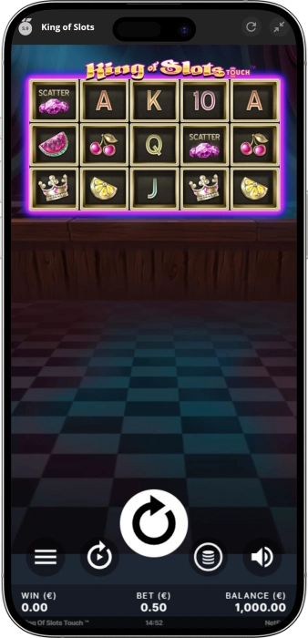
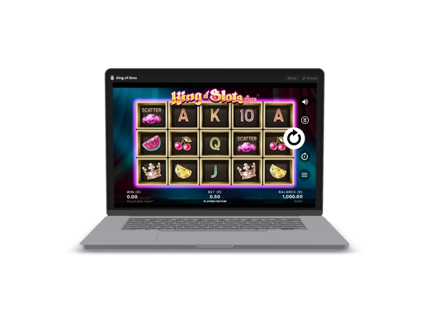

Exclusive welcome offer of
Exclusive welcome bonus of
Play King of Slots Online — NetEnt Fruit Slot
Top Casinos
Bonus Details
Casino
Bonuses
Rate
Free Spins
More Info
Get
Advantages
- Looking for a reliable online slot with consistent payouts and exciting bonus features? King of Slots by NetEnt delivers a certified 96.96% RTP, low volatility, and a 25% hit frequency — making every session both rewarding and enjoyable. Here's what makes King of Slots a top pick:
-
96.96% RTP certified by NetEnt — above industry average of 95.8%
-
Low volatility with 25% hit frequency for steady, frequent wins
-
Sticky Wins™ feature holds winning symbols for re-spin payouts
-
Free Spins bonus round triggered by 3+ Scatter symbols
-
Bets from $0.25 to $250 across 25 fixed paylines, 5×3 reels
-
Fully mobile-optimised — play on iOS and Android with no download
- Join thousands of players spinning the reels of King of Slots daily. Powered by NetEnt — a globally trusted provider with certified fair play and independently audited RNG software.
King of Slots App



About King of Slots by NetEnt
King of Slots is a classic fruit-themed video slot developed by NetEnt, one of the world's most respected game providers. We offer this certified title featuring 25 paylines, 96.96% RTP, and low volatility gameplay.
- Developed by NetEnt — globally certified slot provider
- 96.96% RTP independently verified for fair outcomes
- Sticky Wins™ mechanic for extended winning combinations
- Fully mobile-compatible across all devices and browsers
King of Slots runs on NetEnt's certified RNG engine, audited for fairness and random outcomes. Our platform uses SSL 256-bit encryption protecting all player data. Every spin is transparent, safe, and independently tested.

We continue adding the finest NetEnt titles to our collection, giving you access to proven slots like King of Slots. Spin the reels today and discover why this classic fruit machine remains a favourite among real money players worldwide.
King of Slots: Full Gameplay Guide
King of Slots by NetEnt — Complete Gameplay & Features Guide
King of Slots is a polished video slot developed by NetEnt, one of the most respected software providers in the online gambling industry. Released in 2015, this fruit-themed slot machine has maintained its popularity among players worldwide thanks to its clean mechanics, generous certified RTP of 96.96%, and engaging bonus features. We're proud to offer this timeless title in our gaming portfolio, giving you instant access to smooth gameplay, responsive controls, and rewarding sessions across desktop and mobile devices. Whether you're a casual spinner or a seasoned player optimising bankroll strategy, King of Slots delivers consistent entertainment with a dependable mathematical engine behind every spin.
Game Setup: Reels, Rows, and Paylines Explained
King of Slots is built on a classic 5-reel, 3-row grid featuring 25 fixed paylines, meaning all lines are always active on every spin. The layout uses 15 independent reel strips — each column on each row operating with its own random outcome — which contributes to the 25% hit frequency that makes this slot one of the most reliable fruit machines in the NetEnt catalogue. Winning combinations are formed by landing three to five matching symbols from left to right on any active payline. The straightforward structure makes King of Slots easy to understand for newcomers, while the layer of bonus mechanics keeps experienced players engaged through extended sessions. Our platform renders this 5×3 layout flawlessly on all screen sizes, with crisp visuals and instant loading even on mobile browsers.
- 5 Reels × 3 Rows: Classic grid format with 15 individual reel positions, each operating independently for maximum variety on every spin.
- 25 Fixed Paylines: All paylines active on every spin — no need to manually adjust lines, ensuring consistent coverage and hit opportunities.
- Left-to-Right Wins: Combinations pay from the leftmost reel, rewarding three, four, or five matching symbols across any of the 25 lines.
- 25% Hit Frequency: Approximately one in every four spins produces a winning outcome, making King of Slots one of the highest-frequency fruit slots available online.
Wild Symbol: How Substitutions Work in King of Slots
The Wild symbol in King of Slots substitutes for all standard symbols on the reels, helping complete winning combinations that would otherwise fall short. When a Wild lands on reels 2, 3, or 4, it can dramatically increase the chance of hitting multi-line wins in a single spin. The Wild does not substitute for the Scatter symbol, which has its own independent role in triggering the bonus round. NetEnt's certified RNG ensures that Wild placements are entirely random, with no predictable patterns — every spin gives you a genuine shot at a Wild-assisted win. We recommend playing all 25 paylines at your chosen stake to maximise the impact of Wild substitutions across the full grid.
What is the Sticky Wins™ Feature in King of Slots?
The Sticky Wins™ feature is King of Slots' signature mechanic and one of the main reasons this slot machine maintains such a devoted following among online players. When a winning combination is formed, the winning symbols are held ("stuck") in position on the reels while the remaining positions spin again for a re-spin. If the re-spin produces additional wins, those symbols also become sticky, and another re-spin is awarded. This chain reaction continues until no new wins appear on the re-spin, at which point the total accumulated prize is paid out.
- Win Retention: Winning symbols freeze in place while non-winning positions re-spin, giving you multiple chances to extend a single winning sequence.
- Chain Re-spins: Each consecutive winning re-spin adds newly sticky symbols and triggers another free re-spin, potentially stacking payline wins across the entire 5×3 grid.
- Compounding Value: During a Sticky Wins™ chain, multiple paylines can activate simultaneously, allowing the payout to grow significantly beyond the initial win amount.
- No Extra Cost: The Sticky Wins™ mechanic activates automatically at no additional stake cost — it is built into the base game engine and applies to every qualifying spin.
Free Spins Bonus Round: Triggering and Playing
The Free Spins bonus is activated by landing three or more Scatter symbols anywhere on the 5×3 grid during the base game. Once triggered, you receive a set number of free spins that play out automatically at your current bet level, with all 25 paylines active throughout the round. The Sticky Wins™ mechanic remains active during Free Spins, meaning that any sticky win sequence that forms during the bonus extends your winning potential even further without consuming additional spins. This combination of free play and the Sticky Wins™ system is where King of Slots generates its highest payout moments, with the max win of 700x your total bet achievable within this bonus context. Our platform streams the Free Spins round in smooth HD-quality graphics, with real-time win counters and an auto-collect feature at the end of the bonus round.
- Trigger: Land 3, 4, or 5 Scatter symbols anywhere on the grid during the base game to activate the Free Spins round.
- Stake Locked: Free Spins play at your current bet level — consider your stake before triggering to maximise the value of the bonus round.
- Sticky Wins™ Active: The Sticky Wins™ re-spin mechanic continues during Free Spins, allowing winning chains to stack payouts across all 25 paylines.
- Max Win Potential: Up to 700x your total bet is achievable, primarily unlocked through Free Spins combined with Sticky Wins™ chains on high-value symbols.
Symbol Paytable: Classic Fruit Symbols and Crown
King of Slots uses a fruit machine symbol set inspired by traditional casino aesthetics, featuring cherries, lemons, watermelons, and melons alongside premium jewel and crown symbols. The lower-value fruit symbols (cherries, lemons) appear most frequently on the reels, contributing to the high hit frequency of 25%. The crown symbol serves as the highest-paying regular symbol, with a 5-of-a-kind crown combination producing the single largest standard line win available in the base game. Wild symbols boost payouts by completing combinations across all 25 paylines, while Scatters serve their dedicated role as the Free Spins trigger. The colourful, gem-toned design gives this classic fruit slot a vibrant, modern feel while keeping the symbol language instantly recognisable to players familiar with traditional reel machines.
Mobile Compatibility: Play King of Slots on Any Device
King of Slots is fully optimised for mobile play across iOS and Android devices, requiring no app download or software installation. The game loads directly in any modern mobile browser, with the interface automatically scaling to fit smartphone and tablet screen sizes. All features — including Sticky Wins™ re-spins, Free Spins, and the full control panel — function identically on mobile as on desktop, with touch-responsive buttons and intuitive swipe navigation. NetEnt built King of Slots using HTML5 technology, ensuring compatibility with all modern browsers including Chrome, Safari, Firefox, and Edge. Whether you're playing on an iPhone 15, Samsung Galaxy, or iPad, we guarantee a smooth, lag-free session with consistent frame rates and reliable connection performance.
| Feature | Detail | Notes |
|---|---|---|
| Wild Symbol | Substitutes all | Except Scatter |
| Sticky Wins™ | Re-spin mechanic | Base + Free Spins |
| Free Spins | 3+ Scatters | Current stake |
| Paylines | 25 fixed | Always active |
| Max Win | 700x stake | Via Free Spins |
| Mobile | HTML5 / All OS | No download |
Demo Play vs Real Money: Which Should You Choose?
We offer King of Slots in both free demo mode and real money play, giving every player the flexibility to choose their preferred experience. Demo mode uses virtual credits and carries no financial risk, making it the ideal option for new players learning the mechanics of Sticky Wins™, understanding the paytable, or testing betting strategies without cost. Real money play unlocks the full gaming experience — with actual payouts, bonus activation for real prizes, and the complete thrill of a 700x win potential on every spin. Both modes run on the same certified NetEnt RNG engine, ensuring the mechanics, features, and symbol frequencies are identical. We recommend spending time in demo mode first if you're new to King of Slots, then transitioning to real money once you're comfortable with the gameplay rhythm and bet sizing.
Software Providers
King of Slots RTP, Bets & Strategy
King of Slots RTP, Volatility, Betting Range & Winning Strategy
Understanding the mathematics behind King of Slots is essential for maximising your enjoyment and managing your bankroll effectively during play. This NetEnt slot machine is engineered with a certified 96.96% RTP (Return to Player) — meaning that for every $100 wagered over a long session, the game theoretically returns $96.96 to players. Paired with low volatility and a 25% hit frequency, King of Slots is purpose-built for steady, frequent wins rather than rare massive jackpots. Whether you're a casual player spinning for entertainment or a strategic gambler tracking variance, we provide all the data you need to make informed decisions before and during your session on this iconic online slot.
What Does 96.96% RTP Mean for King of Slots Players?
The RTP of 96.96% places King of Slots above the industry average of approximately 95.8%, making it one of the better-performing fruit slots in terms of theoretical return within the NetEnt portfolio. RTP is calculated over millions of spins and represents a statistical average — not a guarantee for any individual session. However, a higher RTP indicates that the game's mathematical model is more player-friendly over time. King of Slots' RTP is independently verified by NetEnt's internal certification process and external auditing standards, ensuring the published figure accurately reflects the slot machine's real payout behaviour. We display this information transparently because we believe every player deserves to know the exact return profile of each game in our collection before placing their first bet.
- 96.96% RTP: Above the global online slot average of 95.8% — a strong indicator of player-friendly return mechanics backed by NetEnt certification.
- Practical Return Example: For every $50 wagered over extended play, the theoretical return is approximately $48.48 — representing one of the most reliable payout profiles in the fruit slot category.
- Long-Term Metric: RTP applies across millions of spins — individual sessions will always vary, but the 96.96% figure reflects the slot's genuine mathematical behaviour over time.
- Certified by NetEnt: The RTP figure is independently validated and published transparently, forming part of NetEnt's commitment to fair and certified gaming worldwide.
Volatility Profile: Low Variance for Steady Winning Sessions
King of Slots operates at low volatility, which directly shapes the character of every gaming session. Low volatility means the slot distributes winnings more frequently and in smaller amounts, as opposed to high-volatility games where long losing streaks are followed by rare but large payouts. Combined with the 25% hit frequency — one of the highest among NetEnt's catalogue — King of Slots is designed for players who prefer consistent action and steady bankroll behaviour. This makes it especially suitable for longer sessions, responsible gambling practices, and players exploring the reel gaming experience for the first time. The low variance profile also works exceptionally well when Sticky Wins™ chains occur, turning moderate wins into compounding payouts across multiple paylines without requiring extreme luck.
Betting Range: From $0.25 to $250 Per Spin
King of Slots accommodates a wide spectrum of players with its flexible betting range spanning from a minimum of $0.25 to a maximum of $250 per spin across all 25 fixed paylines. This means the cost-per-payline at minimum bet is just $0.01, making it one of the most accessible real money slots available online. High-stakes players can scale up to $250 per spin, where the maximum win potential of 700x translates to a maximum payout of $175,000 from a single spin. The betting interface is intuitive and responsive on both desktop and mobile, with simple +/- controls for adjusting stakes in seconds. We support all major currencies for real money play, allowing you to set your stake in your preferred denomination without conversion concerns.
| Stake | Per Spin | Max Win |
|---|---|---|
| Minimum | $0.25 | $175 |
| Low | $1.00 | $700 |
| Medium | $10.00 | $7,000 |
| High | $50.00 | $35,000 |
| Maximum | $250.00 | $175,000 |
Winning Strategy Tips for King of Slots
While no slot strategy can alter the certified RTP or guarantee wins on any individual spin, there are several practical approaches that experienced players use to get the most out of their King of Slots sessions. Understanding the low volatility profile means you should expect frequent small-to-medium wins rather than waiting for rare large payouts — adjust your bankroll expectations accordingly. The Sticky Wins™ mechanic means that holding higher-value symbols on the grid before a re-spin significantly increases payout potential, so it's worth observing how symbols position themselves before each chain reaction. We also recommend setting a clear session budget before you begin, using our responsible gaming tools to set deposit and session limits that keep play enjoyable and within your means.
- Use Demo Mode First: Spend time in free play mode to understand the Sticky Wins™ chain mechanics and typical win frequency before committing real money stakes.
- Bankroll Management: With a 25% hit frequency, plan for sessions of 80-100 spins at your chosen stake level, ensuring your budget covers natural variance in the short term.
- Target Free Spins: The bonus round with Sticky Wins™ active is where the highest payout potential lies — the 700x max win is realistically achievable during Free Spins with a full sticky chain on premium symbols.
- Consistent Stake Sizing: Avoid drastically changing bet sizes mid-session, as the low volatility model performs most predictably when stake levels remain stable throughout play.
- Autoplay Option: Use the built-in autoplay function for hands-free spins — set win and loss limits within the autoplay settings to maintain session control automatically.
Responsible Gaming: Playing King of Slots Safely
We are fully committed to responsible gaming and provide every player with a comprehensive suite of tools to maintain control over their slot play. Our platform offers deposit limits, session time reminders, loss limits, and self-exclusion options accessible at any time from your account settings. King of Slots' low volatility profile actually supports responsible play naturally — the steady, frequent win pattern makes it easier to track session performance and recognise when to take a break compared to high-variance titles with long losing streaks. We partner with internationally recognised responsible gambling organisations and provide links to support resources including GamCare, BeGambleAware, and Gamblers Anonymous directly from our help centre. Remember: slots are entertainment tools — always set a budget, stick to it, and play for fun first.
Frequently Asked Questions
King of Slots has a certified RTP of 96.96% — above the industry average of 95.8%. This means the game theoretically returns $96.96 for every $100 wagered over millions of spins. The RTP is independently verified by NetEnt and reflects the true long-term payout profile of this low volatility fruit slot.
Sticky Wins™ locks winning symbols in place while non-winning positions re-spin. If the re-spin creates new wins, those symbols also stick and trigger another re-spin. The chain continues until no new wins appear. This mechanic is active in both the base game and the Free Spins bonus round at no extra cost.
King of Slots accepts bets from $0.25 (minimum) to $250 (maximum) per spin across all 25 fixed paylines. At $0.25, the cost per payline is just $0.01 — ideal for casual play. At $250 per spin, the 700x max win translates to a maximum payout potential of $175,000 in a single spin.
Land 3 or more Scatter symbols anywhere on the 5×3 grid during the base game to trigger Free Spins. The bonus plays at your current stake with all 25 paylines active. Sticky Wins™ also remains active throughout Free Spins, giving you the best chance at reaching the 700x maximum win.
Yes — King of Slots is fully mobile-compatible on iOS and Android via HTML5 technology. No app download is required; the game loads instantly in any modern browser including Chrome, Safari, and Firefox. All features including Sticky Wins™ and Free Spins work identically on mobile and desktop.
Yes — we offer King of Slots in free demo mode using virtual credits, with no registration or deposit required. Demo mode runs on the same certified NetEnt RNG engine as real money play, so all mechanics, features, and win frequencies are identical. It's ideal for learning Sticky Wins™ before betting real money.
King of Slots has low volatility, meaning wins appear frequently but in moderate amounts rather than rare large payouts. This is ideal for extended sessions and bankroll management. Paired with a 25% hit frequency, approximately 1 in 4 spins produces a win, making it one of the most consistent NetEnt slots available online.
King of Slots was developed by NetEnt — a world-leading Swedish game provider now part of Evolution Gaming Group. The game's RNG (Random Number Generator) is certified and independently audited to ensure completely fair, random outcomes on every spin. The published 96.96% RTP is verified and accurately represents the game's real payout behaviour.